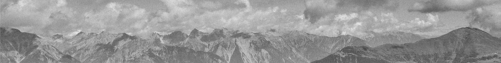

Hello there!
My name is Frosina Milosevska and I come from Makedonska Kamenica,
Macedonia. I am currently a computer
science student in Skopje. 2021/2022 was the first year of college for me,
at the Faculty of Computer Science and Engineering, majoring in Software
Engineering and Information Systems. My previous education consists of Secondary school
(called gymnasium in Macedonia) and primary school.
My favorite things to do are: reading books, enjoying my fav music,
exercising / running / going to gym, and having quality time with my friends.
One of the things I especially love is having peaceful moments and enjoying
my own company. But that doesn't mean that I don't want to be with my friends
and share many laughs! This is actually one of my favorite things to do, and I
always cherish it and look forward to it. Additionally, I am keen on visiting new
places, discovering their culture and admiring their architecture.